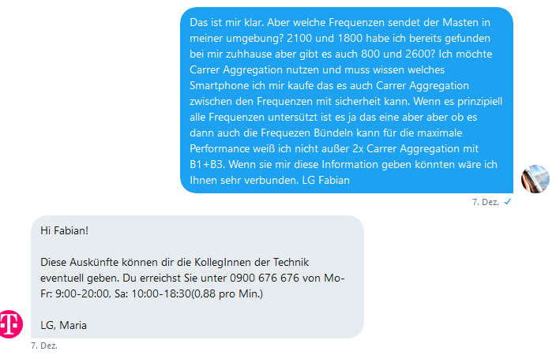

Hallo
Habe momentan einen LTE Tarif von A1 mit 80/20Mbit. Da A1 bis zu 150/50Mbit liefern kann(A1 hat 20 Mhz Bandbreite auf Band 20) sind auch genug Reserven vorhanden auch wenn weitere Nutzer in der gleichen Zelle hängen.
Durch den Kombibonus könnte ich von T-Mobile einen besseren Tarif um €10 günstiger bekommen. Jedoch kann T-Mobile nur maximal 75/25Mbit liefern(bei mir gibt es nur Band 20 mit 10 Mhz Bandbreite). Wenn noch mehrere User dazukommen, dann noch weniger.
Da man Homenet Tarife nur mit 2 Jahren Bindung bekommt, ist es ein gewisses Risiko.
Wird in Vois LTE auf Band 3 aktiviert werden und dann auch T-Mobile hier bis zu 150/50Mbit liefern können?
Hallo Julian,
VoLTE (Voice over LTE) sollte auf allen Bändern laufen. Wie du richtig erkannt hast kann B20 10Mhz nur bis zu 75mbit/s down und 25mbit/s Upload erreicht werden. Ich habe mir gerade die abdeckung bei dir angesehen und das sieht gar nicht gut aus. Wenn man eine PLZ eingibt steht da keine Abdeckung. Falls B3 ausgerollt werden sollte auf 10Mhz dann kannst du 100mbit/s erreichen wenn 20Mhz ausgebaut wird dann sogar 150/50. Wobei das nur Theorie ist. In deinem Fall würde ich es als nicht vortschrittlich ertrachten zu TMA zu wechseln weil du sehr wahrscheinlich die "bis zu" Werte nichteinmal annähernd erreichen wirst da LTE ja ein shared medium ist und du die Resourcen mit den anderen Teilnehmern teilen musst. Desweiteren müsstest du direkten sichtkontakt haben ohne Bäume Häuser oder ähnliches im Weg zu haben.
Sofern das gegeben ist kannst du es ja Testen wenn es nicht gut geht zurück schicken. Haben die Jungs/Mädels von T-Mobile sehr gut gelöst
")
MfG,
Fabian
Die Kurve zu VoLTE ist mir etwas zu scharf.
Ist Vois der Ort?
Was hälst du vom Prepaid Tarif?
Ja, der Ort ist Vois. Bin keine 200m vom Mast entfernt. Um Volte geht es mir nicht, sondern ob bei mir auch LTE auf Band 3 ausgerollt werden wird. An vielen anderen Orten ist das bereits passiert. Momentan gibt es bei mir nur LTE auf Band 20(und 2G und 3G). Da ich die derzeitigen Gegebenheiten kenne und ich bereits einen Handytarif habe mit dem ich testen kann würde mir das Testangebot nichts bringen.
@Julian S.
entschuldige für die unannehmlichkeiten das ich Vois mit VoLTE vewechselt habe.
Du darfst einen Handyvertrag nicht mit einem Stationären vertrag vergleichen. Der Handyvertrag wird immer höher Priorisiert im Masten während der Stationär Tarif immer der "Restlesser" sein wird. Wenn du wissen willst ob B3 bei dir ausgerollt wird in nächster Zeit dann musst du dich an die Technik Hotline wenden (Kostenpflichtig). Ich wollte wissen welche Bänder bei mir verfügbar sind und weder bei Twitter noch bei der normalen Hotline konnte mir das jemand sagen ich wurde immer auf die Kostenpflichtige Technik Hotline verwiesen.
Das ist mir schon klar, daß ein Handyvertrag höher priorisiert wird. Aber wenn beim UL der Speedtest immer, auch in der Nacht bei 23 Mbit ansteht wird kein B3 aktiv sein weil, zumindest in der Nacht, der UL deutlich höher ist. Hab das schon an anderen Orten getestet.
Aber nachdem ich keinen Bock habe mein ganzes Datenvolumen für Speedtest zu verbraten hätt ich gerne gewußt ob und wann bei mir B3 aktiviert wird.
T-Mobile rollt es fleißig aus und hat bei mir in 5280 B3 auch schon geschalten. Eine Auskunft wirst du nur bei der Technik-Hotline erhalten wurde mir auf Twitter mitgeteilt (die Rufnummer dafür ist Kostenpflichtig)(siehe Screenshot im Anhang) . Wenn dir es das wert ist kannst du natürlich gerne Anrufen und es dir sagen lassen ansonsten kannst du nur immer wieder ein Handy zucken und im Netztest Modus(Android) /Fieldtest Modus (IOS) nachsehen ob dein Handy mit B3 verbunden ist.

Deine Anfrage Anfrage war ja welche Bänder bei dir momentan aktiv sind.
Bekommt man auch Auskunft was in Zukunft passiert? Umsonst mag ich das Geld auch nicht rauswerfen. Wenn ich dann vielleicht auch noch in der Warteschleife hänge wirds teuer.
Liest hier niemand von T-Mobile mit?
Es lesen TMobile Mitarbeiter mit, jedoch greifen die nicht immer ein.
Diese Frage kann aber nur ein Mitarbeiter beantworten.
Ist hier keiner der eine Ahnung hat?
Wann wird die Netzabdeckungskarte wieder aktualisiert?
{kind=link}